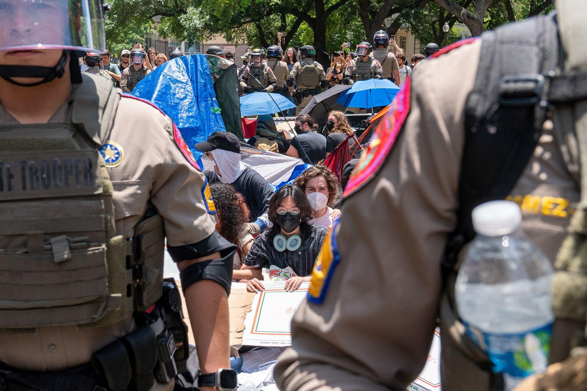

Decolonization
Entry text pending. This page is added so the A–Z structure and links can be reviewed before the full final entry is drafted.

Entry text pending. This page is added so the A–Z structure and links can be reviewed before the full final entry is drafted.